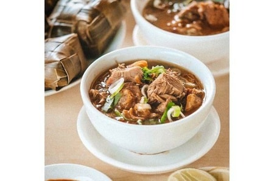
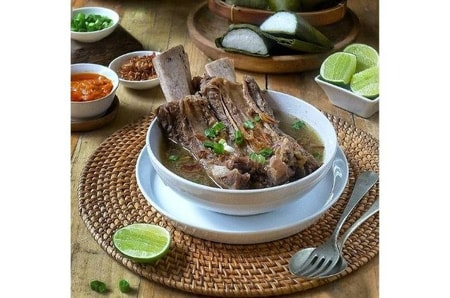
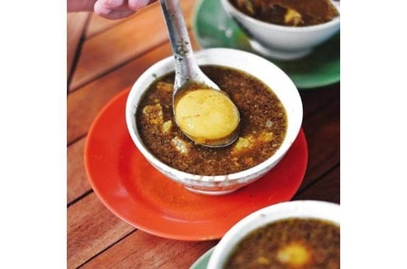
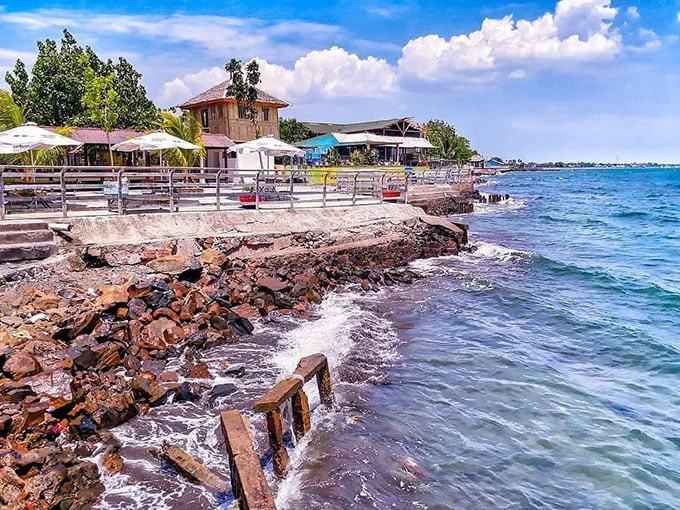

Sebelum tahun 1999, Makassar dikenal dengan nama Ujung Pandang seiring perluasan wilayah dari 21 Km
menjadi 175,77 km berdasarkan Peraturan Pemerintah Nomor 51 tahun 1971. Tentang perubahan
batas-batas daerah Kota Madya Makassar dan Kabupaten
kabupaten Gowa, Maros dan Pangkajene dan kepulauan dalam Lingkungan Daerah Provinsi Sulawesi Selatan
pada tanggal 31 Agustus 1971. Nama Makassar sendiri disebutkan dalam pupuh 14/3 Kitab
Nagarakertagama karya Mpu Prapanca pada abad
ke-14 sebagai daerah taklukkan....
Secara etimologi, sebutan Makassar berasal dari kata "Mangkasarak" yang artinya mulia dan jujur.
Konon nama Makassar berasal dari sebuah peristiwa yang dianggap sangat sakral. Suatu pagi di
tahun
1605 di tepi pantai Tallo, Baginda Raja Tallo ke-VI kedatangan seorang lelaki berjubah putih dan
besurban hijau. Hal tersebut diceritakan
pada buku Asal-usul Kota-kota di Indonesia Tempo Doeloe. Pria itu diceritakan punya wajah yang
teduh
dan memancarkan cahaya. Pria itu berjabat tangan dengan Baginda Raja. Di telapak tangannya
tertulis kalimat Syahadat.
Baginda Raja percaya pria berjubah itu adalah Nabi Muhammad. Hal tersebut dipercaya sebagai
jejak
sejarah asal usul nama Makassar, yang diambil dari Akkasaraki Nabiyya. Artinya adalah nabi
menampakkan diri. Setelah mengalami perubahan
nama dua kali, kemudian Kota ini dinamakan kembali menjadi Makassar pada 13 Oktober sesuai
Peraturan
Pemerintah Nomor 86 Tahun 1999 tentang Perubahan Nama Kota Ujung Pandang menjadi Kota Makassar
dalam
Wilayah Provinsi Sulawesi Selatan
sebagai wujud keinginan masyarakat yang mendapat dukungan DPRD bersama Pemerintah Kota.
Makanan Khas



Kelezatan berbagai masakan Makassar memang sudah terkenal sejak lama. Tak heran jika kota terbesar di
Indonesia bagian timur ini dikenal luas sebagai surga makanan. Berikut empat kuliner Makassar
terbaik yang wajib Anda coba.
1. Coto Makassar
Pertama, Coto Makassar. Hidangan ini dikenal sebagai hidangan sup tertua di Nusantara.
Dulunya, Makassar Coto bahkan menjadi makanan favorit keluarga kerajaan Gowa di Sulawesi
Selatan. Menggunakan lusinan bumbu pilihan, perpaduan
kuah kental dan daging yang empuk pasti akan membuat Anda ketagihan.
2. Konro
Hidangan ini berupa iga sapi yang tersaji pada bentuk sup juga dibakar. Berbeda menggunakan
coto, sup konro mempunyai kuah coklat yang tidak begitu kental. Rasanya spesial kaldu sapi
menggunakan tambahan rempah. Sementara itu,
konro bakar umumnya tersaji menggunakan siraman bumbu kacang.
3. Pallubasa
Sekilas sajian ini seperti coto. Tetapi berdasarkan segi rasa kentara berbeda. Pallubasa
mempunyai kuah berwarna coklat kekuningan, hal ini dikarenakan efek penggunaan bumbu kunyit.
Selain itu, pallubasa memiiki rasanya yang lebih
kompleks. Hidangan ini biasanya tersaji menggunakan taburan kelapa goreng dan kuning telur
1/2 matang.
4. Sop Saudara
Selain berdasarkan ketiga diatas, pilihan kuliner berkuah yang harus dicoba yaitu sop
saudara. Isiannya berupa irisan daging sapi, soun, & perkedel kentang. Semangkuk sop saudara
paling pas disantap beserta telur asis & ikan bandeng
bakar.
Wisata

Makassar adalah salah satu kota metropolitan yang terdapat pada Indonesia bagian Timur. Tak heran
apabila banyak loka wisata yang terdapat pada ibu kota Sulawesi Selatan itu. Bahkan banyak tempat
wisata Makassar yang mempunyai keunikan
& estetika alam memikat. Bagi Anda yang mencari wisata religi, pantai, edukasi, dan yang lainnya
pula tersedia pada Makassar. Berikut ini kami rekomendasikan tempat wisata bagi Anda yang ingin
berlibur di Makassar. Berikut 4 Tempat
wisata yang harus anda kunjungi:
1. Pantai Losari
Terletak pada Ujung Pandang, Pantai Losari adalah objek wisata yang patut dikunjungi saat
Anda berkunjung ke Kota Makassar. Lokasinya tidak jauh dari Bandara Hasanuddin, dimana Anda
mampu menempuhnya lebih kurang 1/2 jam saja.
Disekitar tempat wisata ini banyak penjual oleh-oleh khas Makassar.
2. Pantai Galesong
HKawasan Pantai Galesong adalah objek wisata yang sangat cocok buat Anda penikmat wisata air.
Pantai Galesong ini mengkombinasikan pantai menggunakan kolam renang yang letaknya pada
bibir pantai. Tetapi terdapat pula wisata lainnya
misalnya wahana adrenalin, outbound, restoran, dan hotel.
Pantai Galesong ini berada di kabupaten Takalar, Sulawesi Selatan. Tiket masuk buat
mengunjungi pantai ini hanya Rp25 ribu per orang dan Anda telah menikmati seluruh sarana
yang terdapat pada tempat pantai. Pantai Galesong mampu
Anda akses setiap hari mulai jam 8 pagi sampai jam 7 malam.
3. Pantai Anging Mamiri
Anda juga dapat mengisi akhir pekan atau menyegarkan pikiran dari kesibukan pekerjaan dengan
berlibur ke Pantai Anging Mammiri. Bersebelahan dengan Pantai Tanjung Bayang, Pantai Anging
Mamiri juga panorama alam yang sangat indah.
4. Pantai Kuri Indah
Salah satu tempat wisata pada Maros yang bisa Anda kunjungi yaitu Pantai Kuri Indah yang
punya bibir pantai dihiasi lempengan batu pada atasnya. Keindahan pantai ini akan
benar-benar mempesona waktu mentari tenggelam. Anda juga
bisa berkeliling hutan mangrove dengan memakai perahu nelayan.